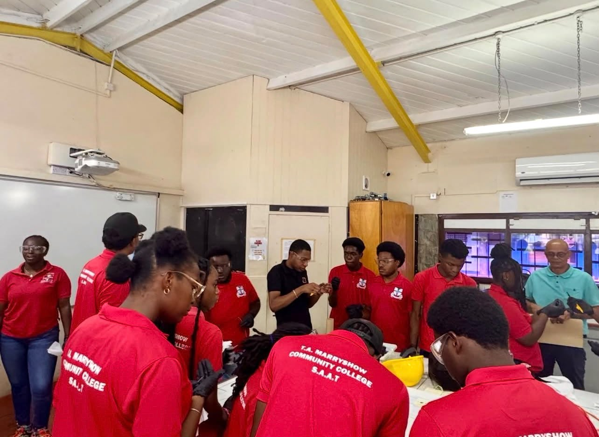
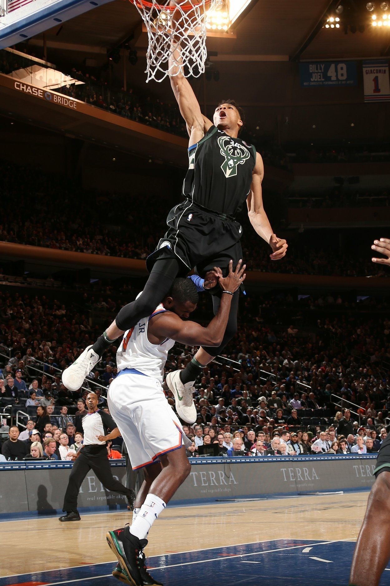
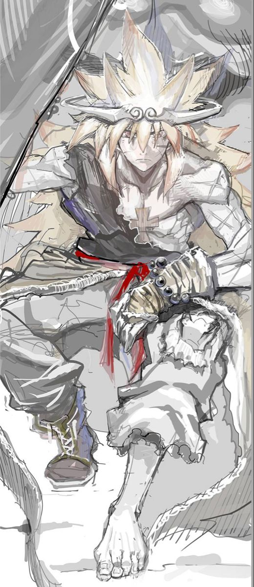
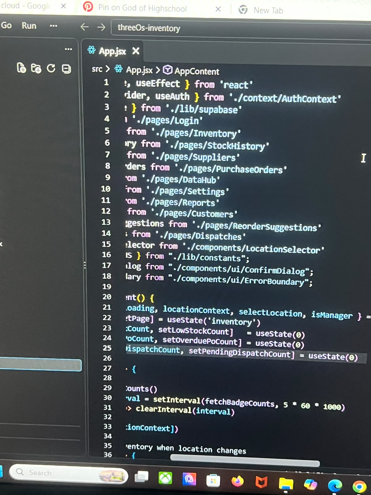

About Me
Who is Keipher Ross?
Why is he relevant to your time?
All of your questions will be answered
Hello, my name is Keipher Ross. I'm a year 2 T.A Marryshow College student, currently doing the program known as Information Technology.
I am 18 years old and I am extremely passionate about technology and how it interacts with our world, specifically the software side of Technology, I was always hooked to designing and building structures which could be used to solve problems because of that the two areas of Information technology which I am most interested in are Software Engineering and Cloud Architecture, I am currently an aspiring Software Engineer and Cloud Architect.

What are his Hobbies?
My hobies usually involve playing video games, sports and reading manga
Sports
The first sport I started playing was football, and it's still my favourite sport, however ever since i turned 13 I started playing basketball more and more, so now I play both sports, but I still prefer football over basketball.

Manhwa
God of Highschool
This would not be an about me if i didnt tell you about the best manwha, God of Highschool, God of Highschool teaches you about the importance of friendship,strengthening the mind and body, it's also a part of the reason why i exercise and play sports alot.

What's my Skillset?
Here are some of the skills I've developed:
- Programming in Python and JavaScript for web and system application development
- Web Development with HTML, CSS, and JavaScript
- Backend Development using Node.js and Express
